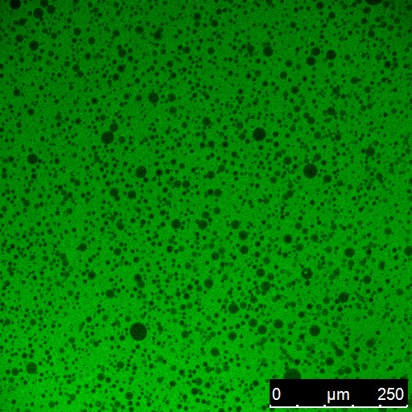
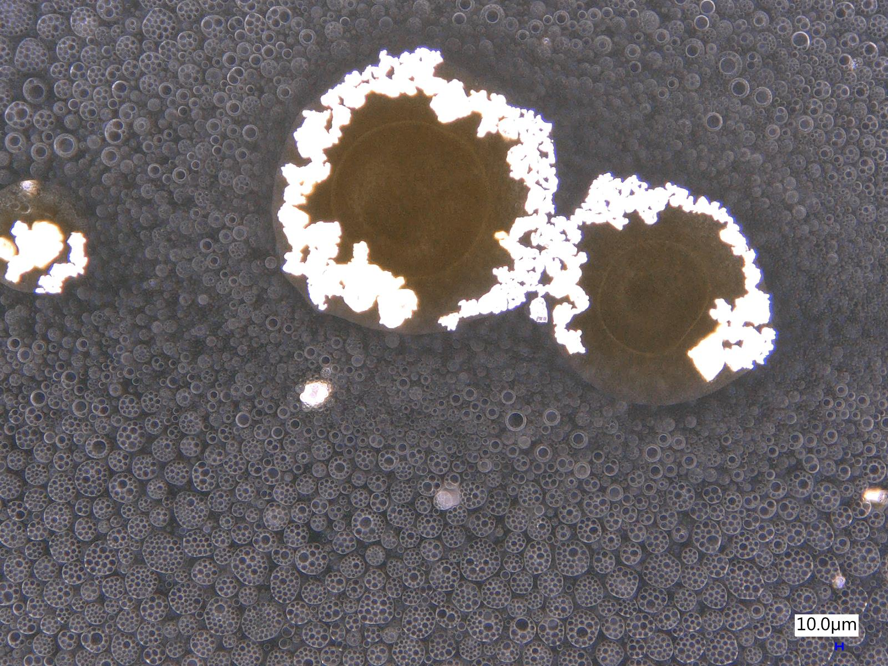
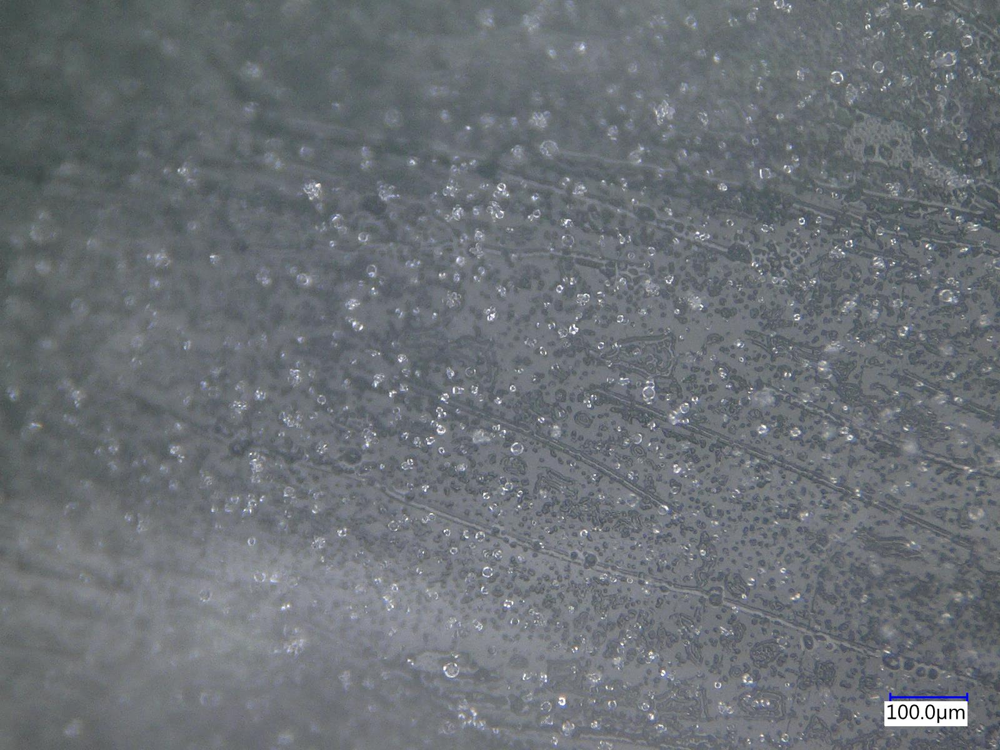
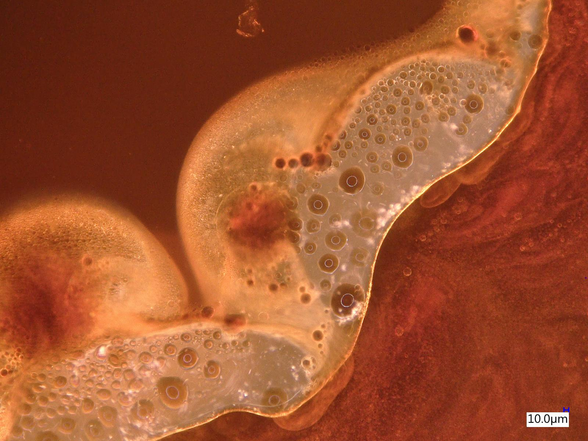
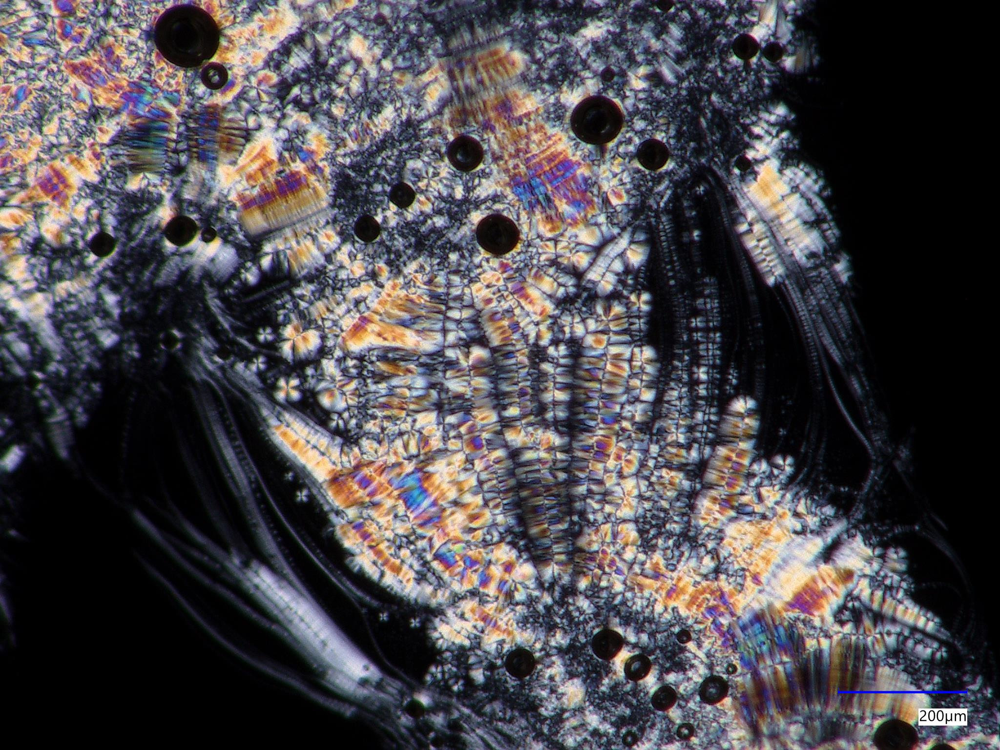
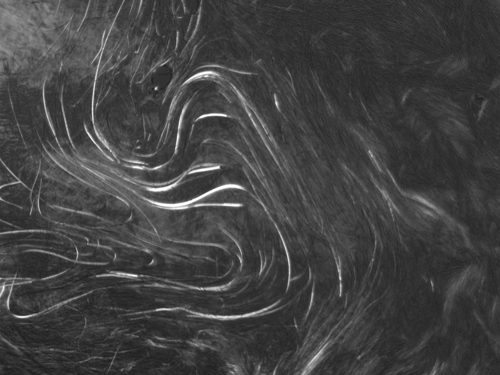

Different systems. Fundamental questions.
Our work asks how molecular and interfacial interactions, phase equilibria, and transport processes control behavior across scales. Colloid and interface science, physical chemistry, and self-assembly provide shared foundations; distinct research directions need not share identical mechanisms.
Phase Behavior & Separation Phenomena
We investigate mixing, demixing, selective partitioning and phase evolution in multicomponent systems. Studies of chemically induced liquid–liquid separation, re-entrant behavior and freezing-induced solute segregation provide ways to test how intermolecular interactions, thermodynamics and kinetics determine macroscopic outcomes. Separating water-miscible contaminants is one application of these fundamental questions.
When phase separation changes chemical partitioning
Chemical additives and freezing can reorganize multicomponent liquids in different ways. These experimental images illustrate how new phases and interfaces influence segregation and partitioning, without implying that each system follows the same mechanism.




Transport Phenomena in Complex & Heterogeneous Media
We study how molecules and colloidal species move through liquids, interfaces, and porous and fractured media. Diffusion, sorption, interfacial exchange and chemical heterogeneity can influence retention, release, and migration. Changes in groundwater composition—including those produced by phase separation or chemical transformation—connect transport to our phase-behavior research. Contaminant migration provides an important experimental and environmental context.
Functional Soft Materials & Mechanoelectric Responses
We investigate how molecular and interfacial organization, ionic redistribution and mechanical deformation contribute to functional responses in soft materials. Current work focuses on interpreting deformation-dependent electrical signals without assuming an intrinsic piezoelectric mechanism. Earlier research on responsive gels, emulsions and polymeric systems provides a related foundation in stimulus-dependent material behavior.


From molecular interactions to phase behavior
Preferential solvation and intermolecular association can generate compositional heterogeneity before macroscopic demixing. This schematic represents one possible progression in complex aqueous mixtures; not every system traverses these stages or follows the same kinetics.
Research Approaches
We combine experimental characterization with thermodynamics and molecular modelling to connect molecular interactions and mesoscale organization to observable behavior. Methods are selected according to the physical questions under investigation.
Scattering & spectroscopy
Small-angle X-ray and neutron scattering (SAXS/SANS) probe structure and heterogeneity across length scales. Fourier-transform infrared spectroscopy (FTIR) and X-ray absorption spectroscopy (XAS/XAFS) help examine molecular environments and interactions at interfaces.
Microscopy & physical characterization
Optical, polarized-light and confocal microscopy resolve dispersed phases and organized materials. Interfacial characterization, sorption and transport experiments, and electromechanical measurements connect microscopic structure to measurable response.
Thermodynamics & computation
We use thermodynamic analysis and COSMO-RS to investigate nonideal mixing and preferential interactions, together with density functional theory (DFT) calculations. Molecular dynamics (MD) simulations are an expanding component of our work, used to probe solvation, association and structural dynamics.
Across interfaces, phases and materials
The three directions are interconnected. Molecular association can change phase behavior; phase separation and chemical transformation can modify transport; and interfacial structure and ionic motion can influence the response of soft materials. We investigate these connections while distinguishing observed behavior from proposed mechanisms.
For a complete, current publication record, visit Google Scholar.